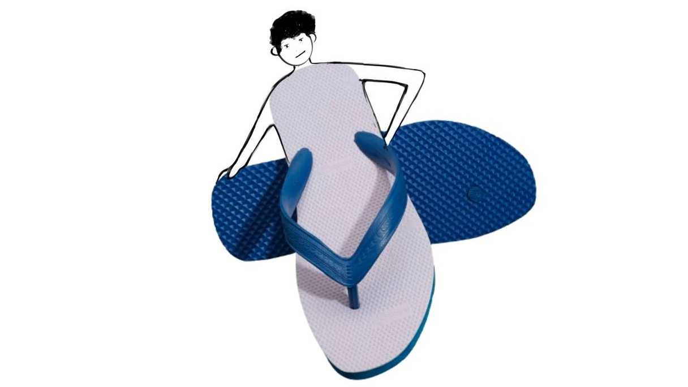

Autobiography of a Hawai Chappal
Imagine the autobiography (2000 words + images) of a Hawai chappal or a pencil, from its conception, manufacturing, delivery, usage to retirement.
Instructions
• Lifecycle journey and interactions with different stakeholders
• Base it on solid research of the lifecycle from design to retirement
• Understand the processes through research, not just fiction
• Use the journey map approach to identify critical touchpoints
• Combine your creativity (fiction) with known typical processes in the supply chain of a Hawai Chappal or a pencil (from procurement of raw material to the delivery to the end user)
• Do not just present the autobiography but also present the ‘making of the autobiography’
• Account for the elements and principles of design in the autobiography
Week 1: Research, Plot and draft
Week 2: Final submission
Week 1 : Research, Plot and draft
Research: Understanding the Lifecycle of a Hawai Chappal

1. Conception and Design
The Hawai chappal is designed for functionality, affordability, and mass appeal. It embodies simplicity and durability.
Predominantly uses natural rubber or synthetic alternatives like EVA foam for lightweight and flexible properties.
A minimalistic sole-and-strap design prioritizing user comfort and ease of manufacturing.
2. Manufacturing
Rubber sourced from plantations (e.g., Kerala, India) or synthesized in industrial settings.
Rubber is processed, shaped, and cured into a durable sole.
Straps are attached to pre-molded soles through punching and pinning mechanisms.
Quality Control Ensures durability and uniformity in mass production.
3. Distribution
Packed in bulk and transported via trucks to regional distributors. Sold through wholesalers, street vendors, and stores catering to low-cost markets.
4. Usage
Popular across diverse demographics for its affordability, durability, and versatility.
Anecdotes include beach walks, monsoon adventures, and everyday errands.
5. End-of-Life
Often discarded in landfills due to non-biodegradable materials.
Some chappals are repurposed into mats, craft items, or industrial material.
Synthetic rubber may contribute to microplastic pollution.
Stakeholder Interactions
.avif)
1. Rubber Farmers
Extract raw latex, often facing fluctuating market rates.

2. Factory Workers
Operate machines, assemble components, and conduct quality checks.

3. Distributors and Retailers
Ensure the chappals reach end-users, often navigating low-margin sales.
4. End-Users
Embrace the chappal for its simplicity, durability, and emotional connection.
Journey Mapping
Design Principles
Elements
Form: Simple flat sole with a Y-shaped strap.
Color: Commonly bright colors or classic black/blue.
Texture: Non-slip sole patterns.
Principles
Simplicity: Minimalist design ensures affordability.
Functionality: Durable and comfortable for prolonged use.
Sustainability: Efforts in recycling are limited but growing.
Plot Development
1. Journey Map
2. Narrative Voice
First-person perspective of the chappal, giving it a relatable, lively personality. Example: “Born in the fiery molds of a bustling factory, I came into the world ready to carry the weight of countless footsteps.”
3. Themes
Sustainability and environmental impact.
The interconnectedness of design, production, and user experiences.
Cultural and emotional significance across diverse users.
4. Chapter Outline
Drafting: Sample Sections
---------------------------
Week 2: Final submission
From Molten Rubber to Immortal Soul
Prologue: The Birth of an Idea
Long before I took shape, I existed as a whisper in the corridors of human necessity. My story is not one of royalty or grandeur but of humble service—a testament to simplicity and resilience. My lineage traces back to an era when the world needed practicality over pomp, when the clatter of industrialization met the quiet determination of everyday life.
I was born from a designer’s sketch, a fleeting thought between sips of bitter tea. His hands, calloused from years of drafting, drew my form: two rubber straps in a Y-shape, a flat sole, and a promise of comfort. No embellishments, no frills—just function. His vision was clear: to create footwear for the masses, something that could weather storms, traverse muddy lanes, and cradle weary feet without complaint. He named us chappals, a word that echoed the rhythmic slap of rubber against earth.
Ancestral Roots – The Legacy of the Common Folk
My ancestors emerged in the 1950s, in the wake of a world rebuilding itself. Post-war economies thrived on innovation, and factories hummed with the energy of progress. Leather shoes, once symbols of status, were impractical for the working class. They cracked in the heat, rotted in the rain, and cost a week’s wages. My kind was different. We were molded from rubber—cheap, durable, and unyielding.
The first chappals were crude, their straps cutting into ankles, their soles too rigid. But over decades, we evolved. Designers added grooves for grip, softened edges for comfort, and adjusted the Y-strap to cradle the foot like a mother’s hand. By the time I was conceived, chappals had become a cultural icon. We graced the feet of farmers, street vendors, schoolchildren, and even poets who scribbled verses about our unpretentious charm.
Yet, our existence was bittersweet. We were loved for our affordability but often dismissed as “disposable.” Few paused to consider our journey—the molten origins, the factory fires, the hands that stitched us into being.
The Crucible – Forged in Fire
My birth was a symphony of heat and pressure. The factory, a cavernous hall reeking of sulfur and sweat, buzzed with conveyor belts and hissing molds. Workers, their faces glistening under neon lights, moved like clockwork.
I began as granules of raw rubber, dumped into a vat and melted at 160°C. The molten slurry bubbled and writhed until it was poured into a rectangular mold. A hydraulic press slammed down, imprinting the sole’s pattern—shallow grooves to prevent slips. Seconds later, I was ejected, still steaming, onto a cooling rack.
Next came the straps. A machine punched holes into my sides, and a worker named Rajesh, his fingertips scarred from years of handling hot rubber, threaded a strip through them. He folded the ends into a Y-shape, securing them with a metal rivet. “Another soldier ready for duty,” he muttered, tossing me onto a pile.
Quality control was swift. A woman named Lata inspected me, rubbing her thumb over my edges. She frowned at a tiny air bubble near the heel but let it pass. “It’ll last long enough,” she sighed. Her resignation stung. Did she doubt my resilience?
By dusk, I was wrapped in plastic, wedged into a cardboard box labeled “Sunrise Chappals – Walk with Confidence!” and loaded onto a truck.
The Odyssey – From Factory to Feet
The truck jolted through potholed roads, its suspension creaking under the weight of a thousand chappals. We crossed cities where skyscrapers kissed the clouds, villages where buffaloes lounged in ponds, and highways where the air tasted of diesel.
At a bustling port, our box was tossed onto a ship. Salt spray seeped through the cardboard as we sailed to a coastal town. There, a rickshaw delivered us to Anmol’s Footwear Emporium, a cluttered shop smelling of camphor and ambition.
The shopkeeper, Mr. Anmol, arranged us on a wooden shelf. For days, I watched humanity parade past: a grandmother haggling for her grandson, a tourist marveling at our simplicity, and a laborer testing my flexibility with cracked, tar-stained hands.
Then he arrived—a boy named Arjun, barefoot and sunburnt. His big toe poked through a tattered slipper. “Ma, these ones!” he exclaimed, grabbing me. His mother frowned. “Are they sturdy?” she asked. Mr. Rao grinned. “Indestructible, madam! These will outlive your son’s mischief!”
The transaction took five minutes. Arjun slipped me on, wiggled his toes, and declared, “Perfect!” I swelled with pride.
Arjun’s Shadow – A Life Lived in Motion
Arjun’s world was a whirlwind. Mornings began with a sprint to school, his feet slapping against dewy pavement. I relished the coolness until the sun rose, baking my rubber until it stuck to his skin.
Monsoons were my trial by water. Muddy lanes became rivers, and I fought to keep Arjun upright. Once, a leech latched onto his ankle; he screamed, shook me off, and flung the creature into a paddy field. “You saved me!” he laughed, wiping me clean on his shorts.
Cricket matches were my undoing. Arjun’s enthusiasm outpaced my grip. During a sixer attempt, I flew off, smacking a neighbor’s window. The old man shook his fist, yelling, “Control your slippers, boy!” Arjun retrieved me, whispering, “Don’t worry, buddy. We’ll be legends someday.”
Evenings were quieter. Arjun’s father, a cobbler, often inspected me. “Good quality,” he’d nod, smoothing my frayed straps. His hands, skilled in reviving leather, deemed me unworthy of repair. “Rubber can’t be stitched,” he’d say. I bristled at the injustice—why was leather deemed noble, while I was disposable?
The Fraying Edges – A Slow Goodbye
Years passed. My sole thinned, my straps sagged, and my once-vibrant blue faded to a murky gray. Arjun, now a teenager, replaced me with sneakers. “Too old for chappals,” he shrugged, though I caught him wearing me sometimes during midnight snack raids.
The final blow came during a festival. Arjun tripped on a loose strap, spilling sweets everywhere. His mother tossed me into a corner. “Enough,” she said. “Time for a new pair.”
I languished in darkness, reminiscing about monsoons and cricket balls. Then, one day, sunlight streamed in as a ragpicker’s hook dragged me out. “Useless,” he muttered but tossed me into his sack anyway.
Reborn – The Cycle Continues
The recycling plant was a purgatory of sorts. Conveyor belts carried chappals into shredders, where we were pulverized into granules. My essence merged with others’, a mosaic of forgotten journeys.
I awoke anew as part of a playground mat, cushioning children’s falls. Nearby, a fragment of my sole became a keychain, while another was melted into a flowerpot. My favorite incarnation was as a swing’s grip, where a girl named Priya clutched me daily, her laughter echoing Arjun’s.
Immortality in Impermanence
I am no longer a chappal, yet I am everywhere. In the rubberized roads that bear monsoon rains, in the soles of new slippers, in the hands of artisans crafting toys. My story is cyclical, a testament to reinvention.
Humans speak of legacies as if they must be grand. But mine lies in the ordinary—the millions of steps I enabled, the blisters I prevented, the small boy who once called me “friend.” To serve, to endure, to transform—this is the destiny of the humble.
And so, I wait. For the next mold, the next journey, the next pair of feet.
Thankyou